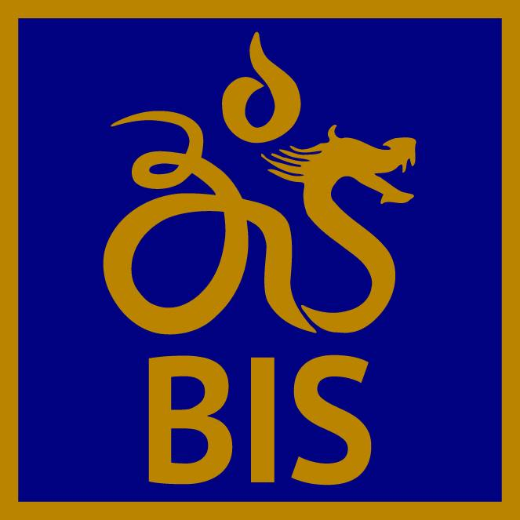

My Journey.

Boston University
B.A. in Computer Science, Expected May 2022
Boston, MA
Currently, I am attending Boston University as a freshman, and throughout my time in BU, it has been such an amazing experience meeting new people, new city, and learning new things everyday. I was awarded Boston University's most prestigious merit scholarship, Trustee Scholarship, which provides full tuition for four years, and I am really grateful to all the people that has supported me through my journey. This scholarship has allowed me to earn more freedom and time to pursue my interests and also take more risks in doing things I never have tried. So far, attending BU's Computer Science lectures has engaged me to learn more about programming, and I want to exercise my creativity and practicality to strengthen myself as a programmer.

Bali Island School (formerly Bali International School)
International Baccalaureate Diploma, May 2018
Bali, Indonesia
I attended Bali Island School when I was in Grade 3, and decided to graduate in this small, yet an amazing school. As BIS is a small school, this allowed me to engage in multiple of activities that I would have never tried. I was able to try out for multiple sports, host my own conferences and competitions, help out in community service and also learn from amazing and respectful teachers. Throughout my 10 years in BIS, my high school has allowed me to find my niche: to explore the realms of the application of math, and thus led me to choose majoring in computer science.